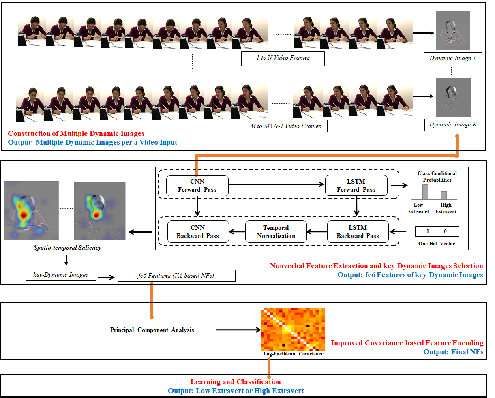
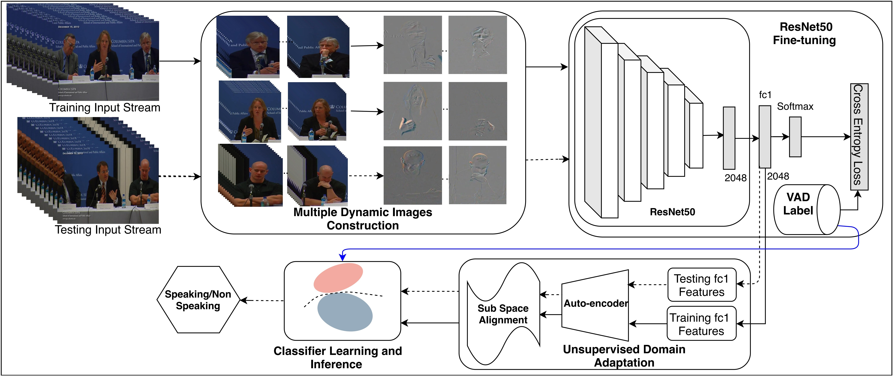

Cigdem Beyanis a researcher at Istituto Italiano di Tecnologia, Pattern Analysis and Computer Vision department. She has been working on nonverbal behaviour analysis during social interactions, which are realized using different machine learning and audio/video processing techniques.She is a reviewer of most significant multimedia, affective computing, computer vision and pattern recognition journals including multiple IEEE Transactions, and IEEE/ACM conferences. She is a Guest Co-Editor of a special issue in Frontiers in Robotics and AI and in the Editorial Board of ICES Journal of Marine Science covering area of applications of computer vision and machine learning in marine science. |
|---|
Cigdem is a postdoctoral researcher at Istituto Italiano di Tecnologia (IIT), Pattern Analysis and Computer Vision (PAVIS) department. In PAVIS-IIT, she has been working on nonverbal behaviour anlaysis during social interactions, which were realized using different machine/deep learning and audio/video processing techniques.
She obtained her Ph.D. (2015) in School of Informatics (specializing Computer Vision and Pattern Recognition), University of Edinburgh, UK, under supervision of Prof. Robert B. Fisher. Her thesis was a part of EU project (FP7) called Fish4Knowledge, which includes fish behaviour understanding, trajectory analysis, anomaly detection, classification of imbalanced data, active learning and big data analysis.
Prior to that, she completed a MSc. (2010) in School of Informatics (specializing Computer Vision), Middle East Technical University, Turkey where she worked on multiple object tracking and abandoned object detection using thermal and visible band video data fusion.
She is a reviewer of most significant multimedia, affective computing, computer vision and pattern recognition journals including multiple IEEE/ACM Transactions, and IEEE/ACM/IAPR/BMVA conferences. She is a Guest Co-Editor in Frontiers in Robotics and AI, in the Editorial Board of ICES Journal of Marine Science covering area of applications of computer vision and machine learning in marine science and a co-organizer of Applications of Egocentric Vision Workshop ( EgoApp2019, EgoApp2020 ).
Beyond her research background, she has a teaching experience (in Turkey and in UK) for 6 years as teaching assistant, guest lecturer, tutor, demonstrator and marker. Additionally, she became an Associate Fellow of the Higher Education Academy in recognition of attainment against the UK Professional Standards Framework for teaching and learning support in higher education in 2014.
Investigating Social Interactions Using Multi-Modal Nonverbal Features
Social Interaction Analysis through Deep Visual Nonverbal Features
Unspervised Social Interaction Analysis in-the-Wild
S-VVAD: Visual Voice Activity Detection by Motion Segmentation
[code]M. Shahid, C. Beyan and V. Murino
IEEE/CVF Winter Conference on Applications of Computer Vision (WACV)
Analysis of Face-Touching Behavior in Large Scale Social Interaction Dataset
[code]C. Beyan, M. Bustreo, M. Shahid, G.L. Bailo, N. Carissimi and A. Del Bue
ACM International Conference on Multimodal Interaction (ICMI)
RealVAD: A Real-world Dataset and A Method for Voice Activity Detection by Body Motion Analysis
[pdf+supp] [code]C. Beyan, M. Shahid and V. Murino
IEEE Transactions on Multimedia
Personality Traits Classification Using Deep Visual Activity-based Nonverbal Features of Key-Dynamic Images
[pdf+supp]C. Beyan, A. Zunino, M. Shahid, and V. Murino
IEEE Transactions on Affective Computing

Voice Activity Detection by Upper Body Motion Analysis and Unsupervised Domain Adaptation [pdf]
M. Shahid, C. Beyan, and V. Murino
International Conference on Computer Vision Workshops (ICCVw)

A Sequential Data Analysis Approach to Detect Emergent Leaders in Small Groups [pdf]
C. Beyan, V.M. Katsageorgiou, and V. Murino
IEEE Transactions on Multimedia
Investigation of Small Group Social Interactions Using Deep Visual Activity-Based Nonverbal Features [poster]
C. Beyan, M. Shahid, and V. Murino
ACM International Conference on Multimedia (ACMMM)
Filling the Gaps: Predicting Missing Joints of Human Poses Using Denoising Autoencoders [pdf]
N. Carissimi, P. Rota, C. Beyan, and V. Murino
European Conference on Computer Vision Workshops (ECCVw)
Multi-task Learning of Social Psychology Assessments and Nonverbal Features for Automatic Leadership Identification [poster]
C. Beyan, F. Capozzi, C. Becchio, and V. Murino
ACM International Conference on Multimodal Interaction (ICMI)
Moving as a Leader: Detecting Emergent Leadership in Small Groups using Body Pose [poster]
C. Beyan, V. M. Katsageorgiou, and V. Murino
ACM International Conference on Multimedia (ACMMM)
Prediction of the Leadership Style of an Emergent Leader Using Audio and Visual Nonverbal Features [pdf+supp]
C. Beyan, F. Capozzi, C. Becchio, and V. Murino
IEEE Transactions on Multimedia
Detecting Emergent Leader in a Meeting Environment Using Nonverbal Visual Features Only [poster]
C. Beyan et al.
ACM International Conference on Multimodal Interaction (ICMI)